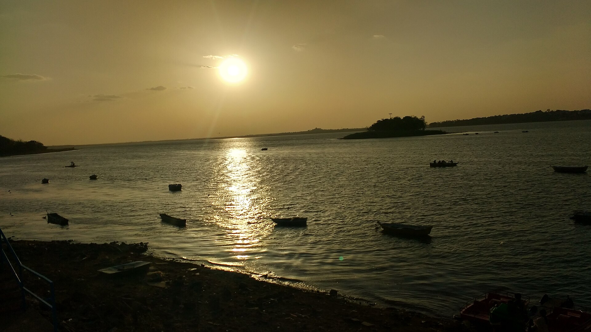

Claude Impact Lab Bhopal 2026 · Track 2 · Decision-support prototype for Bhopal Municipal Corporation · नगर पालिक निगम भोपाल
JalDrishti जलदृष्टि Visarjan Ghat Watch
Evidence-Based Water Quality Risk Support for Durga Visarjan Planning (20 October 2026) — seven Bhopal immersion ghats ranked from 1,524 historical MPPCB test records (2023–2025), every figure traceable to a source PDF page.
- 7 ghats
- 3 festival years
- 13 parameters
- Historical data · not live monitoring
What JalDrishti does यह क्या करता है
Built for a Bhopal Municipal Corporation planning officer deciding where to send aeration, cleaning crews and sampling teams before Durga Visarjan on 20 October 2026.
-
Ranks seven immersion ghats
A provisional Composite Risk Index (0–100) combines oxygen deficit, organic load, metal hazard and post-immersion decline, measured against CPCB Class B limits.
See the ranking -
Every number is traceable
Each reading links back to the MPPCB report year, festival, phase and PDF page. Missing and below-detection readings are kept distinct, never treated as clean water.
Open ghat evidence -
Bilingual brief for officers
An English and Hindi administrative draft that can be copied, downloaded or printed with the full report.
Read the brief -
Ghat-side safety tools
Verified emergency numbers, public contacts, and a Chhath Puja readiness checklist that works in your browser as a local demo.
Go to safety
Data coverage डेटा का दायरा
From the MPPCB Ganesh and Durga Visarjan monitoring reports, checked against CPCB Class B (outdoor bathing) criteria.
- 1,524water-test records
- 7Bhopal immersion ghats
- 2023–2025three festival years
- 13parameters per ghat
- 3MPPCB monitoring reports
- 89.29%of BOD tests above the 3.0 mg/l limit
Historical data, not current conditions ऐतिहासिक डेटा
What the data can tell you
- Which ghats repeatedly failed CPCB Class B limits in 2023–2025.
- How oxygen and organic load changed before, during and after immersion.
- Where monitoring records are missing or ambiguous.
What it cannot tell you
- Whether the water is safe today or on 20 October 2026.
- Bacteriological risk, or metals that were never tested.
- Anything about live crowd, rescue or ambulance availability.
Limitations सीमाएँ
- Provisional index. The CRI weights and scaling constants are planning choices under review, not regulatory standards.
- Gaps in the record. The 2025 MPPCB report has no Durga tables for Bairagarh or Malikhedi; only four heavy metals were tested; no bacteriological parameters were reported.
- Local demo records. Readiness checklists, added ghats and incident reports on the Safety page are saved only in your browser. They are not sent to BMC or any authority and are not verified.
- Not official. JalDrishti is an independent prototype, not a publication of or endorsed by BMC, MPPCB, CPCB or the Government of Madhya Pradesh.